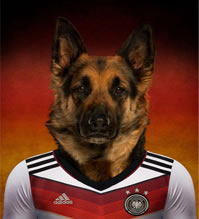
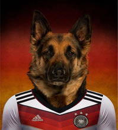

世界杯分组抽|签高清大图|国际足球| 2014欧冠专题|火爆视频
巴西3-1克洛地亚
布拉特承认选卡塔尔是错误 暗指受政治压力压力
- [最新] 维埃拉：放弃纳斯里是重大错误 | 本赛季无可挑剔 | 称名单公布前已知落选
- [花絮] 李娜拍巴西世界杯写真 | 里贝里:为纳斯里落选而难过我们是一个真正的集体
- [德国] 英媒评世界杯八大热门球队 | 世界杯筹备再起冲突 民众科林蒂安球场外示威
- [球队] 斯科拉里透露巴西23人名单已定 | 拜仁官方宣布蒂亚戈手术成功杯
- [赛事] 诺伊尔：首战葡萄牙是决赛 | 我们来自足球王国德国可为巴西或意大利出战
- 世界杯球队住宿奇葩要求：德国最奢侈 一队必备香蕉
- 无缘世界杯23巨星一览：伊布大圣领衔近6亿强阵
- 媒评落选世界杯最佳11人：卡卡小罗特维斯入选
- 那不勒斯妖人面临国籍选择 可为巴西或意大利出战
- 光脚不怕穿鞋的桑巴军团 | 一场3黄牌的格子军铁卫
- 埃托奥骂穆里尼奥“蠢货” 自信能再踢3届世界杯
- 拜仁官方宣布蒂亚戈手术成功 确定缺席世界杯
- 世界杯筹备再起冲突 民众科林蒂安球场外示威(图)
- 曝纳斯里考虑退出法国队 称名单公布前已知落选
- 那不勒斯妖人面临国籍选择 可为巴西或意大利出战
- 那不勒斯妖人面临国籍选择 可为巴西或意大利出战
16:49
16:49
16:49
16:49
16:49
16:49
16:49
16:49
16:49
16:49
16:49


 



独家评论
Exclusive Comments
只有中国球迷不能容忍迪亚曼蒂落选
费尔南多·何塞·托雷斯·桑斯（1984年3月20日－）是班牙足球运动员现效力英格兰球队切尔西。[详细]
不该让廖力生为恒大输球埋单
费尔南多·何塞·托雷斯·桑斯是一名西班牙足球运动员，司职前锋，现效力英格兰球队切尔西.[详细]
费尔南多·何塞·托雷斯·
浮躁的李金羽们当学韩国少壮派教练
费尔南多·何塞·托雷斯·桑斯是一名西班牙足球运动员，司职前锋，现效力英格兰球队切尔西。[详细]
多愁善感的杰拉德注定是个悲剧英雄
费尔南多·何塞·托雷斯·桑斯简称为费尔南多，是一名西班牙足球运动现效力英格兰球队切尔西。[详细]
费尔南多·何塞·托雷斯·
只有中国球迷不能容忍迪亚曼蒂落选
费尔南多·何塞·托雷斯·桑斯费尔南多·托雷斯，一名西班牙足球运动员现效力英格兰球队切尔西。[详细]